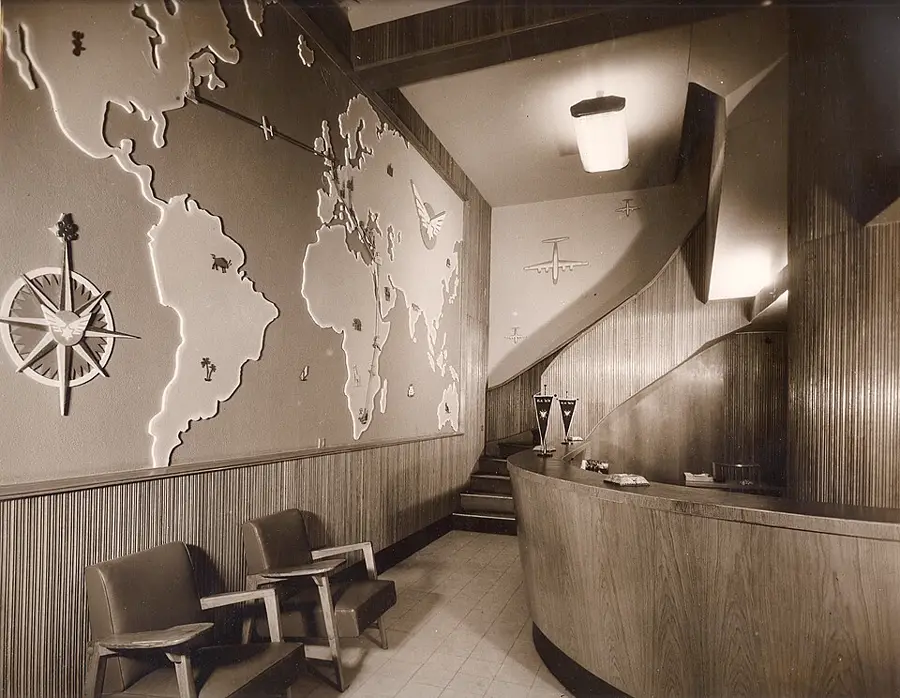

엘알 이스라엘 항공 EL AL Israel Airlines Ltd.
엘알 이스라엘 항공(EL AL Israel Airlines Ltd.)은 이스라엘의 국책 항공사이다. 텔아비브 벤구리온 공항을 허브 공항으로 이용한다.
최종 업데이트
엘알 이스라엘 항공은 어떤 브랜드인가
엘알 이스라엘 항공은 이스라엘의 국책 항공사로, 텔아비브 벤구리온 공항을 허브 공항으로 이용한다. 1948년에 세워진 항공사로, 현재 유럽, 북아메리카, 남아메리카, 아시아 지역의 36개 도시에 취항하고 있다.
국적기로서 해외에서 각종 분쟁이 발생했을 때 유대인들을 구출하는 역할도 담당하는 점이 특징이다. 2005년 이스라엘 정부에 의해 민영화되면서 개인 회사가 되었다.
2025년 5월 기준으로 보유 기종은 Boeing 한 제작사의 항공기로만 구성되어 있으며, 평균 기령은 12.7년이다. 항공 동맹에는 소속되어 있지 않으며, 대한민국에는 2027년 3월에 복항할 예정이다.
엘알 이스라엘 항공은 어떻게 시작되고 성장했나
1948년 9월 이스라엘 초대 대통령 Chaim Weizmann이 제네바 회의에 참가했다가 돌아오면서 이스라엘 공군 비행기를 이용했다. 이스라엘 정부는 보안 문제를 고려해 군용 항공기에 El Al Israel National Aviation Company라는 임시 로고를 그려 넣고 운항했고, 이를 계기로 같은 해 11월 세워진 항공사의 이름도 엘알 항공으로 붙여졌다.
1949년 Douglas DC-4 항공기를 도입하고 파리에 취항했으며, 1949년부터 1950년까지 예멘에서 유대인 주민을 이스라엘로 옮기는 Operation Magic Carpet에 주력으로 참가했다.
엘알 이스라엘 항공의 브랜드 아이덴티티는 무엇인가
이스라엘의 국책 항공사로, 국적기로서 해외 분쟁 시 유대인들을 구출하는 역할을 맡아 온 점이 다른 항공사와 구분된다.
엘알 이스라엘 항공의 대표 제품과 서비스는 무엇인가
1971년 최초로 Boeing 747 기종을 도입했고, 1973년에 추가로 도입해 텔아비브에서 뉴욕으로 직항 노선에 취항했다. 1977년에는 전세 항공사 El Al Charter Services를 설립했으며, 이 회사는 후에 선도르 국제항공으로 사명을 변경했다.
1988년에는 로스앤젤레스에 직항 노선을 개설했고, 1996년에는 요르단에 직항 노선을 취항했다. 1994년 Boeing 747-400, 2000년 Boeing 777 기종을 도입했으며, 1997년에는 별도 회사로 화물 부문을 설립했다.
여러 항공사와 코드셰어 협정을 맺고 있다.
엘알 이스라엘 항공은 지금 어떤 상태인가
2005년 이스라엘 정부에 의해 민영화되어 개인 회사가 되었다. 2025년 5월 기준으로 Boeing 기종만으로 항공기를 운용하며 평균 기령은 12.7년이고, 항공 동맹에는 소속되어 있지 않다.
대한민국에는 1995년 서울-텔아비브 직항을 취항했다가 외환 위기의 여파로 1997년에 단항했고, 2027년 3월에 복항할 예정이다.
엘알 이스라엘 항공 로고는 어떻게 변해왔나
시기는 위키데이터 로고 기간 또는 위키미디어 커먼즈 파일 정보 기준입니다. 이미지를 누르면 원본 파일과 라이선스를 볼 수 있습니다.
사진으로 보는 엘알 이스라엘 항공의 역사

자주 묻는 질문
엘알 이스라엘 항공는 어느 나라 브랜드인가요?
엘알 이스라엘 항공는 이스라엘의 여행·호스피탈리티 브랜드입니다.
엘알 이스라엘 항공는 언제 설립되었나요?
엘알 이스라엘 항공는 1948년 설립되었습니다.
엘알 이스라엘 항공의 브랜드 아이덴티티는 무엇인가요?
이스라엘의 국책 항공사로, 국적기로서 해외 분쟁 시 유대인들을 구출하는 역할을 맡아 온 점이 다른 항공사와 구분된다.
엘알 이스라엘 항공의 대표 제품은 무엇인가요?
1971년 최초로 Boeing 747 기종을 도입했고, 1973년에 추가로 도입해 텔아비브에서 뉴욕으로 직항 노선에 취항했다.
엘알 이스라엘 항공는 현재 어떤 상태인가요?
2005년 이스라엘 정부에 의해 민영화되어 개인 회사가 되었다.
엘알 이스라엘 항공의 본사는 어디에 있나요?
엘알 이스라엘 항공의 본사는 벤구리온 국제공항에 있습니다(위키데이터 기준).
엘알 이스라엘 항공의 공식 웹사이트는 어디인가요?
엘알 이스라엘 항공의 공식 웹사이트는 https://www.elal.co.il 입니다.
출처와 검증
엘알 이스라엘 항공 관련 참고: 공식 웹사이트 · 위키데이터 Q208489 · 한국어 위키백과 · 영어 위키백과. 브랜드명은 한글과 원어를 함께 표기하되 데이터에 없는 표기는 만들지 않습니다. 기원 국가·설립연도는 검수된 정의문에서 확인된 값을 우선하고, 없을 때만 공식 웹사이트 URL이 일치하는 위키데이터 개체의 값을 씁니다. 웹 첫 보관은 인터넷 아카이브가 공식 사이트 첫 화면을 처음 보관한 날로, 사이트 개설일과 다를 수 있습니다. 위키데이터 값은 2026-10-11 기준입니다.